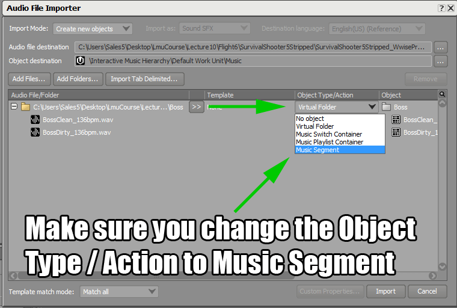

Go to your Interactive Music folder and create a folder called Boss
Put any music you would like to use for the Boss Wave into this folder.
I kept it simple with just 2 tracks - Boss Clean and Boss Dirty
Drag the Boss Folder you created onto the Music Work Unit.
On the folder change the Object Type / Action from Virtual Folder to Music Segment
Go to the Layouts tab and change to the Interactive Music Layout.
Change the tempo of the Boss Music Segment to 136 Beats per Minute. This is the Tempo of all our Music files.
Ctrl+Left-Click and move the Start Cue (Green Flag) to the start of our Music.
Left-Click to move the End Cue (Red Flag) to the end of the Music on bar 17.
Right-Click on our Boss Music Segment ->New Parent-> Music Playlist Container
We need to set the tempo for our Music Playlist Container to 136bpm.
Otherwise, it will overwrite our Tempo on the Music Segement
Drag our Stage Music Segment onto the Sequence Continuous icon in the Music Playlist Container
On the Sequence Continuous click the down arrow to set the Loop Count to Infinite.
Click on the Boss Stage Music Playlist Container and then Pin the Transport Control
Left-Click on the Boss Music Segment to give it focus.
Pick a Boss Music track and set it to either Random Step or Sequence Step
Right-Click on the Sequence / Random Step track and add a Sub-Track.
Drag a Boss Music Track onto the newly created Sub-Track
Clean up your Mess! Delete any left-over tracks
Name your State Group WaveState and add Two States Normal and Boss
Here is how it should look when it is finished.
Add some State Transitions and Times from the Normal to Boss State
And from Boss to Normal
Select both the Normal and Boss Music Playlist container.
Right-Click -> New Parent -> Music Switch Container
Name the Music Switch Container I choose MusicSwitch
Select the Music Switch and set it's Tempo to 136
In the case, where you had music of different tempos you would not do this operation.
In our case, all of our music is 136 bpm
1.Select the Music Switch and 2. Look at the Association Container
on the right.
Click on the >> and go State Groups -> Default Work Unit ->
WaveState
Click on the Boss State and then click on Add Path
Either Drag the Boss Music Playlist onto the Path's Object Box OR
You can click on the elipsis ... and select BossStage from the list.
Add another Path for the Normal Stage music and place it's
Music Playlist on the Stage Object slot as in this picture.
Select the Music Switch Container and then Navigate to the
Transitions Tab.
Click on Add Transition and drag the Normal Music onto the Source
and the Boss music onto the Destination.
Currently when we enter our Boss State we have to wait until the
Normal music is finished playing before we transition to our Boss Music.
That's too slow. Select an Exit source at value that is more prompt.
Add another transition from the Boss Music back to the Normal.
Select the transitions one at a time and make sure the Exit Cue is
set to next bar and the Entry Cue is Same Time as Playing Segment
Check the Fade-Out button under Exit Source at and Click Edit.
Set the Fade Time and Offset to 1 and Change the Curve to
something you like.
Under Destination Check Fade-In and click on Edit.
Set the Fade Time to 1 and the Offset to -1 and Change the Curve.
Repeat this process for the other Transition as well!